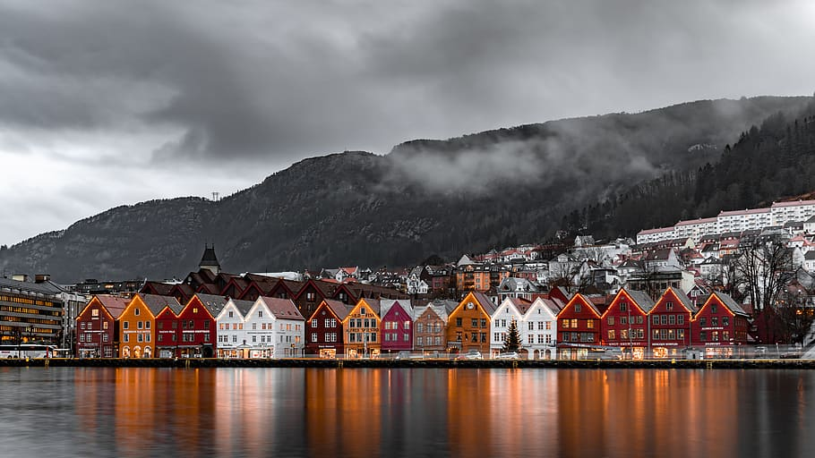
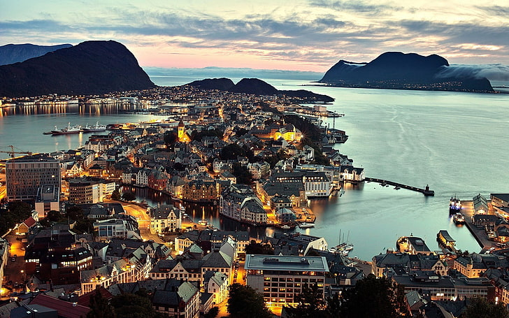
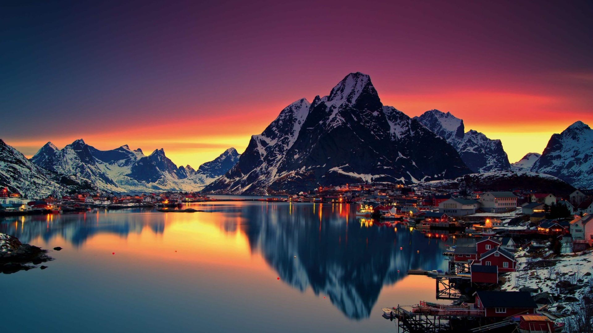

Pueblos costeros
Bergen
Situado en la costa suroeste de Noruega, Bergen es la segunda ciudad más grande del país
y está rodeada de impresionantes paisajes naturales, incluidos los famosos fiordos noruegos.
La ciudad es conocida por su encantador centro histórico, sus coloridas casas de madera,
el mercado de pescado Bryggen, declarado Patrimonio de la Humanidad por la UNESCO, y su ambiente
animado y cultural.

Alesund
Ubicado en la costa oeste de Noruega, Ålesund es famoso por su arquitectura única de estilo Art Nouveau,
que se destaca por sus edificios adornados con detalles ornamentales. Además de su belleza arquitectónica,
Ålesund ofrece impresionantes vistas panorámicas de los fiordos y la costa, así como actividades al aire
como senderismo, kayak y observación de ballenas.

Lofoten
Este archipiélago en el norte de Noruega es conocido por sus pintorescos pueblos de pescadores,
casas rorbu tradicionales (cabañas de pescadores), montañas escarpadas y playas de arena blanca.
Lofoten es un destino popular para actividades al aire libre como senderismo, pesca, observación de aves
y fotografía de paisajes. Los pueblos de Reine, Henningsvær y Nusfjord son especialmente encantadores
y atraen a muchos visitantes cada año.
